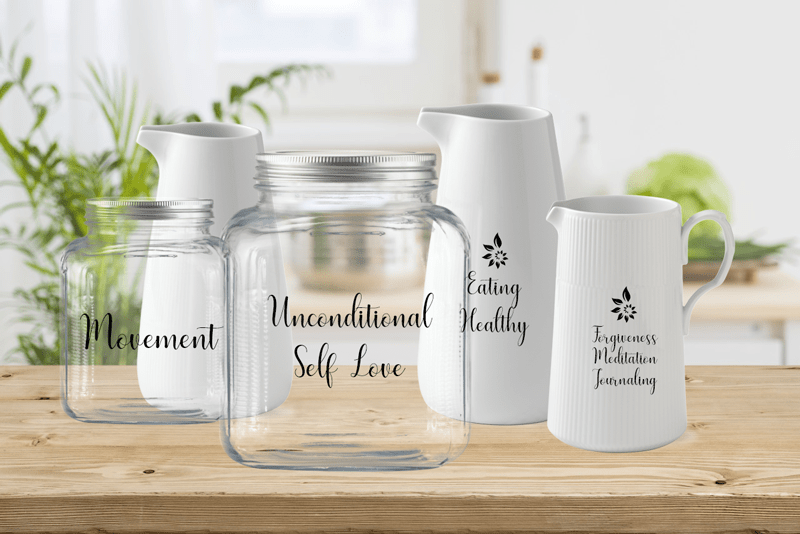
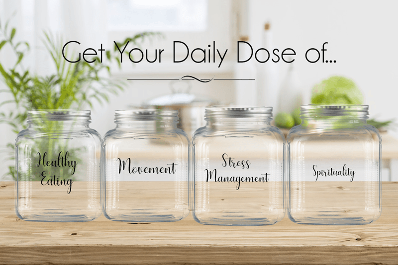

Why am I NOT Seeing Results?
You’re doing all the right things. You’ve said goodbye to processed food, you’re spending a small fortune on “superfoods,” and you’re dedicating your time to creating meals brimming with healthy ingredients. But you’re still struggling with weight or health issues. What gives?!
As more people embrace a diet of whole foods and healthy fats, a lot of people tend to go overboard on nuts, seeds, natural sugars, and healthy desserts, thinking that they can disregard self-control when eating “healthier.” I have been there and done that. There’s a forgiving learning curve when it comes to UPGRADING your eating lifestyle.

Forgiving Learning Curve
What do you mean by a FORGIVING learning curve, Amie Sue? What I mean here is that switching over to a healthier lifestyle takes time, effort, awareness, and most of all unconditional-self-love. The road ahead of you is going to be bumpy and full of learning opportunities. When we walk in love towards ourselves, we do so without chastising the hick-ups that we may encounter along the way. We LEARN (not punish) from our mistakes. We EMBRACE (not run from) our decisions. We LOVE (not hate) ourselves if we slip up and eat a Twinkie.
When I look back to my first year of learning how to eat healthier, I do so with a forgiving heart. Back then, I didn’t know how to listen to my body. Shoot, that concept wasn’t even part of my reality. I “suffered” for the sake of “eating healthy.” I stood tall and was mightly proud of the fact that I could eagerly announce that I was a 100% raw foodist!
My high and mighty stance and my desire to eat according to a dietary label caused me to have a deaf ear to what my body was experiencing. My mind and body were experiencing different results. I didn’t have guidance, and my health was suffering because I wasn’t giving it a BALANCE (keyword) of well-needed nutrients. I had underlying health issues that didn’t thrive in the position I put myself in. I LEARNED a lot during this experience; I EMBRACED what I learned because it was part of my personal growth. And I LOVE myself for now knowing how to look food in the “eye” either accepting or rejecting it based on what my body needs and not by what food label is attached to it or what the latest trend is.
The Definition of RAW
To me, the definition of “raw” is R.A.W. — Real, Alive, and Whole. Furthermore, raw foods are defined as unheated or cooked at less than 115 degrees (F) to maintain higher nutrient values and antioxidant levels and to aid digestion. It is not a “free pass” to eat unlimited amounts of raw desserts, nuts, seeds, etc. It’s really about reducing and eventually eliminating processed foods. It’s about embracing foods that honor our bodies in their whole form.
Are you Eating too Many Raw Desserts?
Over the past year or two, there has been a considerable increase in both the popularity and availability of raw desserts. The concept is simple – ditch refined, modified ingredients and replace with wholesome ones in their original state to change desserts from mouthfuls of empty calories to nutritionally dense sweet treats. But, you can go overboard on them. Raw desserts are often high in sugars… natural ones buy none the less.
Are you Eating too Many Nuts and Seeds?
Raw GOURMET dishes (sweet and savory) do use quite a few nuts, seeds, and coconut products in them. Nuts are often viewed as a “gateway” food in the raw food diet. They are part of the journey in learning how to replace refined and processed ingredients and are great for those who have gluten and dairy intolerances. As time progresses, people who have been doing raw foods for some time usually phase out those heavier nut-based recipes, or better yet they find a way of incorporating them into a more balanced diet.
Are you Eating a Varied Diet?
If you are struggling with weight or health issues, ONE thing to focus on is making sure you are eating a variety of whole foods. A creamy nut-based salad dressing is excellent when paired with a large fresh salad that is loaded with the colors of the rainbow. I talk more about this in my post Where and How do I get All my Nutrients?
Are you ONLY focused on Food?
And lastly, before I let you go, it is vital that I mention that FOOD isn’t the only answer to weight and health issues. Food can either be our medicine or our poison and learning everything you can about this and about what works you for is so important. But there is a full circle approach that we must take in our journey of healthy living.
You know how we learn to read ingredient labels? Whenever we reach for food, it becomes an automatic reaction to turn the container around so you can read all the ingredients listed. The same goes for your health. Anytime something isn’t functioning correctly; whether it be weight struggles, digestive issues, or whatever the case may be, flip things around and look within.

Ask yourself…
Do you move your body regularly? Do you practice daily self-love through forgiveness, journaling, and meditation? Do you have a spiritual practice and if so, are you honoring your beliefs? What is the condition of your living environment? Are you under a lot of stress and can you find a way to reduce and handle it better?
As you can see, there is a lot to take into consideration when it comes to overall wellbeing. With just ONE of these things out of whack, it can create a ripple effect that leads you down a path of unhealthiness. I don’t know about you, but this just hit home for me. Sending you positive energy and love, amie sue
© AmieSue.com